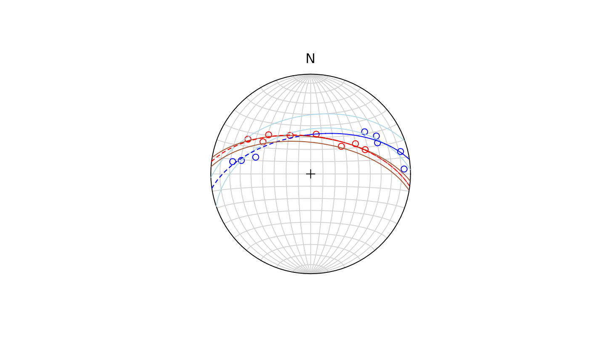

Least-square fit of small and great circles to spherically projected data
Source:R/best_pole_gray.R
best_fit_plane.RdFinds the best small and great circles using the algorithm by Gray et al. (1980)
References
Gray, N.H., Geiser, P.A., Geiser, J.R. (1980). On the least-square fit of small and great circles to spherically projected data. Mathematical Geology, Vol. 12, No. 3, 1980.
Examples
data("gray_example")
gray_example1 <- gray_example |>
dplyr::mutate(
dipdir = Strike + 90,
dip = Dip,
id = seq_along(dip)
)
gray_cleavage <- dplyr::filter(gray_example1, Type == "Cleavage")
gray_bedding <- dplyr::filter(gray_example1, Type == "Bedding")
test_clea <- cbind(gray_cleavage$dipdir, gray_cleavage$dip) |> as.plane()
test_bedd <- cbind(gray_bedding$dipdir, gray_bedding$dip) |> as.plane()
best_clea <- best_fit_plane((test_clea))
best_bedd <- best_fit_plane((test_bedd))
stereoplot()
stereo_point(test_clea, col = "blue")
stereo_point(test_bedd, col = "red")
stereo_smallcircle(best_clea$axis_c, best_clea$cone_angle, col = "lightblue")
stereo_smallcircle(best_clea$axis_g, 90, lty = 2, col = "blue")
stereo_smallcircle(best_bedd$axis_c, best_bedd$cone_angle, col = "sienna")
stereo_smallcircle(best_bedd$axis_g, 90, lty = 2, col = "red")
